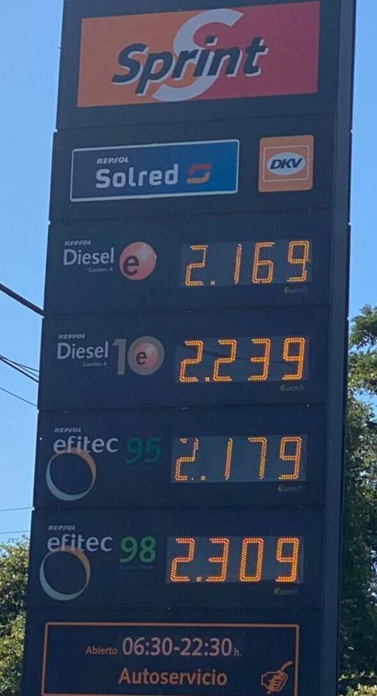

Los números decimales están tan integrados en nuestra vida cotidiana como las fracciones, aunque operar con ellos resulta mucho más intuitivo. Por ejemplo, cuando acudimos a una gasolinera y nos fijamos en los carteles en los que figura el precio del litro de gasolina, podemos descubrir que dicho precio aparece con tres decimales:

Sin embargo, cuando acudimos a la caja a pagar el precio total nos lo dan con dos decimales. Esto quiere decir que nuestra cuenta ha sufrido un redondeo, ya que en nuestro sistema monetario solo disponemos de monedas de céntimo para pagar.